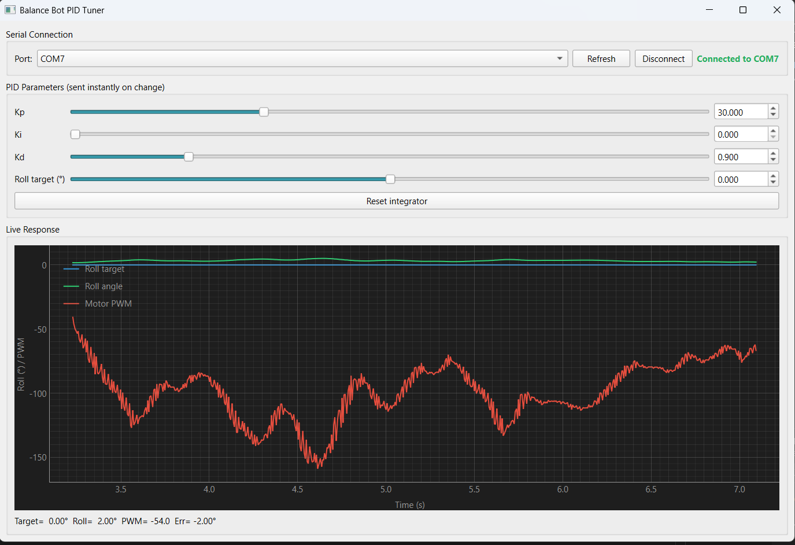

Self-Balancing Robot
Real-time balance using a BNO055 IMU, PID control, complementary filtering, and quaternion-based orientation on an Arduino Nano with DC motors and a 3D-printed frame.

Overview
This robot explores real-time feedback, sensor fusion, and motion stabilization using minimal hardware: an Arduino Nano as the controller, a BNO055 9-axis IMU for orientation, and TT Yellow DC motors driven by TB6612FNG motor drivers. Development started with a cardboard prototype for quick algorithm tests, then moved to a 3D-printed three-level platform for symmetry, stability, and cleaner mounting.
The robot measures tilt continuously; a PID control loop computes corrective motor speeds to stay level. Proportional reacts to current error, derivative to rate of tilt, and integral (optional) to accumulated offset—useful on uneven surfaces or after small disturbances. Power comes from a Li-ion battery for untethered operation.
Tilt was first derived from accelerometer and gyroscope separately, then fused with a complementary filter (sufficient without a full Kalman filter for this build). Orientation later used quaternions converted to Euler angles for accurate roll and pitch. PID gains were tuned by trial and observation for smooth balancing.
To improve controller development and tuning, I designed a custom desktop PID tuning application in Python using PyQt6 and PyQtGraph. The application communicates directly with the Arduino over a serial connection, allowing PID parameters (Kp, Ki, and Kd) and balance setpoints to be adjusted in real time without recompiling or uploading new firmware. This significantly accelerated the tuning process by enabling rapid experimentation and immediate feedback.
The software also receives live telemetry from the robot, displaying roll angle, target angle, controller error, and motor output on a continuously updating graph. By visualizing the system's response while modifying controller gains, I was able to analyze overshoot, oscillations, settling time, and overall stability more effectively than through serial monitor output alone. The application additionally includes controls for resetting the controller's integral term and monitoring the robot's state during operation.
How it works
- Sensor input: BNO055 reports orientation; quaternions feed roll/pitch.
- PID control: Target roll is 0° (level). Error drives
k_p,k_d, and optionalk_i. - Motor output: Positive output drives forward, negative backward, zero stops.
- Loop timing: Sensor reads and PID updates run each loop (on the order of ~1 ms in the firmware description).
Hardware
- Microcontroller: Arduino Nano
- IMU: Adafruit BNO055 (9-axis)
- Motor driver: TB6612FNG
- Motors: TT Yellow DC motors
- Power: Li-ion battery
- Structure: 3D-printed 3-level platform
PID Tuning App
Desktop UI built with PyQt6 and PyQtGraph to adjust Kp, Ki, and Kd over serial and watch roll, error, and motor output update in real time.

Software
- Language: Arduino C/C++
- Libraries: Adafruit_BNO055, Adafruit_Sensor
- Serial debugging at 115200 baud
- PID Tuning App
Demo (TikTok)
Videos from the repository README: